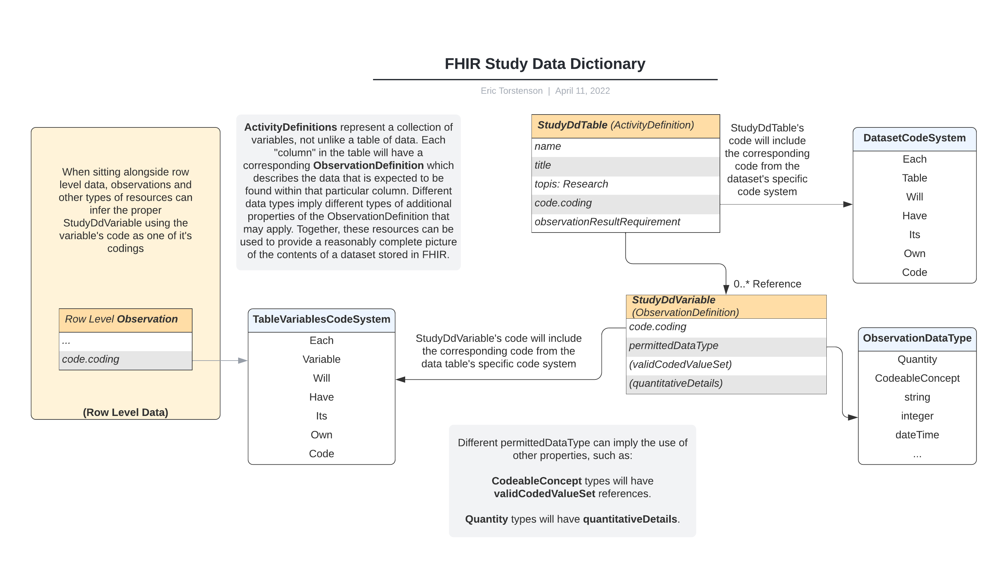

NCPI FHIR Study Summary IG
0.1.0 - ci-build
NCPI FHIR Study Summary IG - Local Development build (v0.1.0). See the Directory of published versions
The data-dictionary acts as the key to the dataset itself. Traditionally, this file is delivered alongside with flat files that are passed along to researchers and contain column names, descriptions along with other details to help the individuals doing analysis to understand how they are expected to use the data. FHIR provides descriptive resource types that can reasonably be used for the purposes of describing the variables that are found within a given dataset.

Codes are a fundamental mechanic for relating things across different resources. To that end, there should be code systems to represent the tables and variables alike.
A single CodeSystem should be defined containing a code for each of the tables that make up the dataset.
Each table itself will be represented as its own CodeSystem where each variable represented in FHIR will have a corresponding code.
Based on the FHIR ResourceType, ActivityDefinition, The data table represents a single table within the dataset and contains references to the individual data variable details.
Some key parameters that can help identify the table and provide context and necessary clarity on the table’s purpose would be:
One of the code.coding properties should point to the table’s Code from with the dataset’s Table CodeSystem.
Individual variable definitions will be attached as references within the observationResultRequirement property.
Data variables describe a single column within the data table. The descriptive components used will depend on the type of data represented in the variable itself and maybe be very simple (basic string data), or moderately complex, depending on the data that is known about the variable itself.
To associate a given variable to it’s specific entry in a data-table, one of its code.coding properties should point to the corresponding variable from the table’s CodeSystem. This same code can be used throughout resources that are produced as a result the data from this variable.
One fundamental aspect of a good data dictionary is a comprehensive description of the data that can be expected to be found within each individual variable. This can be defined using proper codes for the permittedDataType and relevant secondary properties.
Strings, boolean values and integer all represent very simple data types that can be expressed, possibly with no additional details, though, in some cases, additional details may also be permitted (such as a min/max range for an integer value, or possible a ValueSet containing the codes that can be found for special cases).
For Quantity, Integer and any other type that can be bound within a range, this should be specified using qualifiedInterval[x].range (or age/genestationalAge should those be more appropriate).
For quantities and any other data type that needs to be accompanied with a unit, this should be specified using quantitativeDetails.unit.
When specifying that a variable should consist of a value from a list of possible values, a reference to a ValueSet containing all possible values should be given for the property, validCodedValueSet.